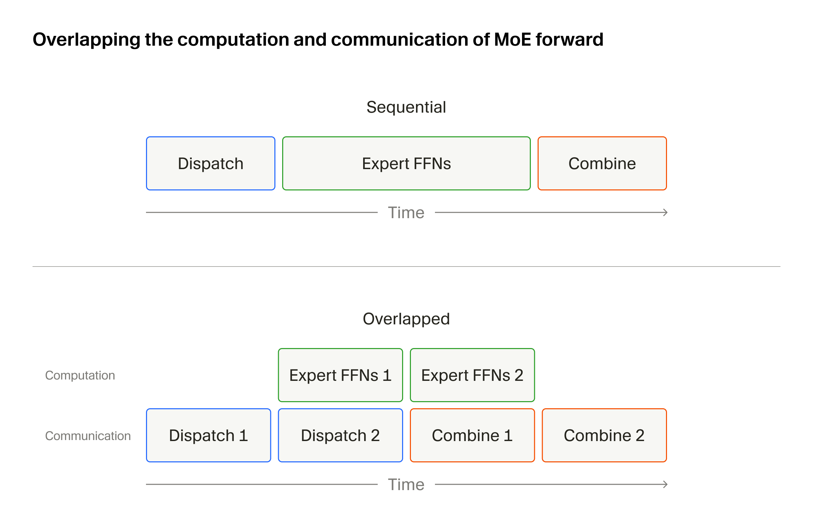
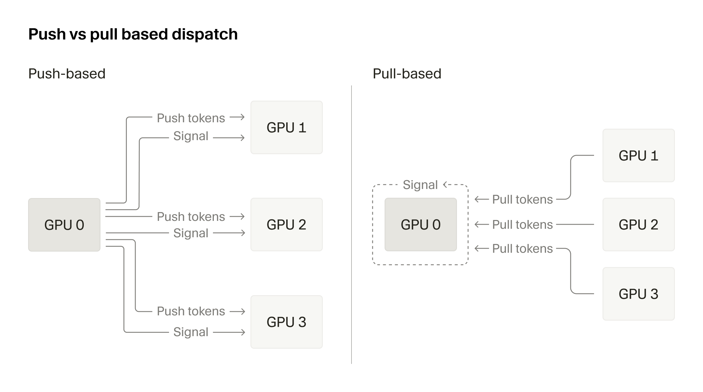
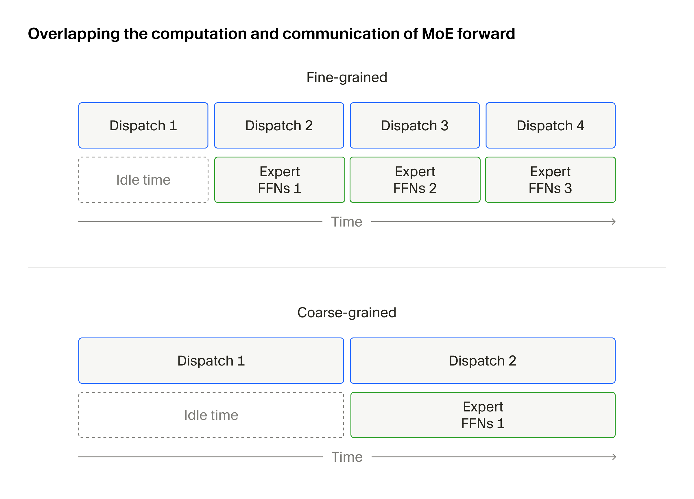
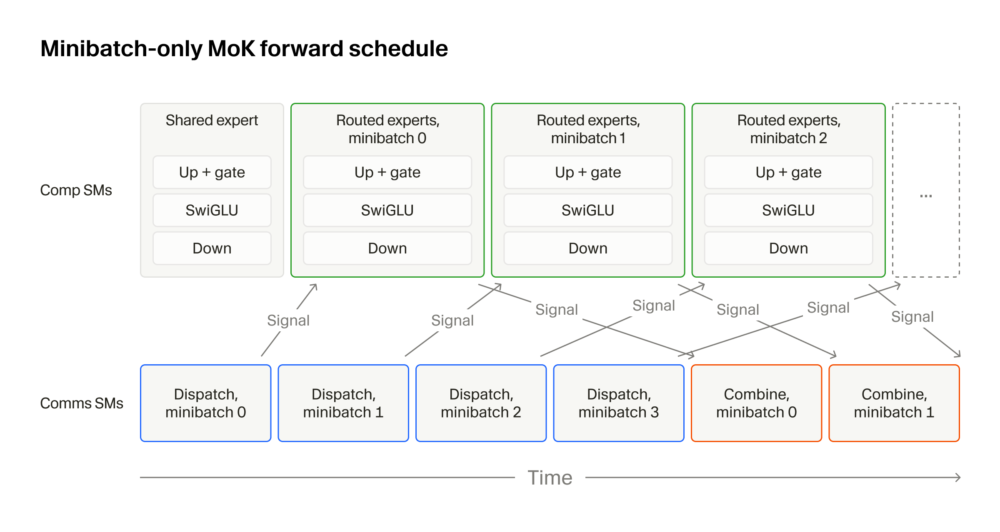
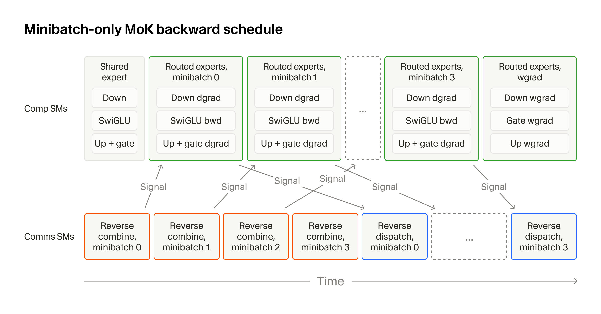
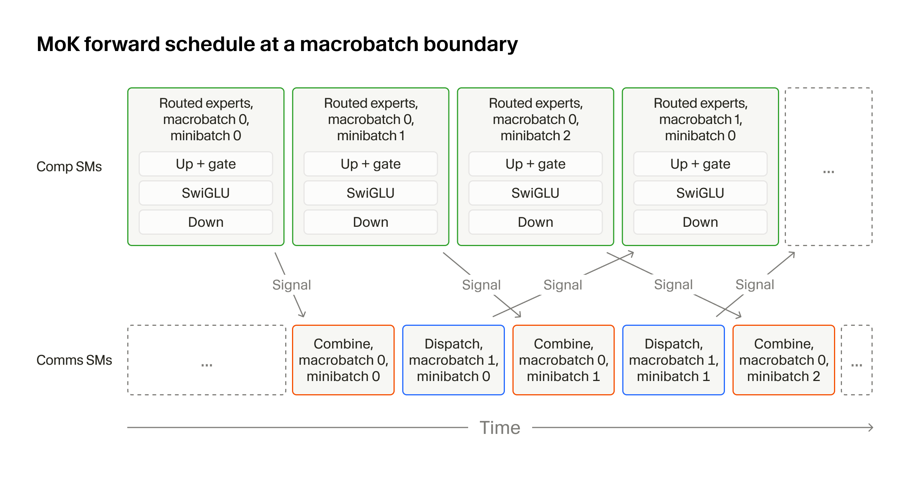

随着我们扩展Composer（我们的Agentic（智能体原生）代码模型）的训练和推理，MoE层一直是主要瓶颈。视工作负载和训练配置而定，它可能消耗超过一半的端到端训练时间。
MoK通过将全部MoE通信和计算融合到单个完全确定性的内核中来解决这一瓶颈。它现在支撑着数万块GPU上的Composer训练。
Mixture-of-Kittens在GB300 NVL72上的MXFP8前向吞吐比最快的公开基线（NCCL + PyTorch DeepEP + PyTorch DeepEP + TransformerEngine HybridEP + Megatron）高出最多2.37倍。Mixture-of-Kittens在GB300 NVL72上的MXFP8前向吞吐比最快的公开基线（NCCL + PyTorch DeepEP + PyTorch DeepEP + TransformerEngine HybridEP + Megatron）高出最多2.37倍。Mixture-of-Kittens在GB300 NVL72上的MXFP8前向吞吐比最快的公开基线（NCCL + PyTorch DeepEP + PyTorch DeepEP + TransformerEngine HybridEP + Megatron）高出最多2.37倍。在我们跨多个NVL72机架的生产训练栈中，MoK将端到端每秒token数提升了1.41倍。
Mixture-of-Kittens (MoK) 是我们为NVL72s打造的用于生产的MoE训练megakernel，现已开源。
你可以在GitHub上试用MoK并浏览代码。我们期待你的反馈和贡献。
MoK源于此前多次加速MoE层的尝试。过去一年，我们编写了自己的MXFP8和NVFP4训练内核，并为MoE推理开发了 "warp decode" 方法。
但这些技术只优化了该层的计算部分，并假设GPU间通信会单独处理。在我们的生产工作负载中，通信已成为限制因素。这促使我们从第一性原理重新设计整个MoE层，将通信直接构建到内核中。
此外，迁移到GB300 NVL72从两个重要方面改变了问题。首先，NVL72是单个NVLink域内的多节点机架，能够在全部72个GPU上实现快速、细粒度的计算与通信重叠。
其次，集成的Grace CPU（GB300中的“G”）相对于GPU往往较慢。我们发现GPU流很容易追赶上CPU侧的工作，导致GPU在此期间完全空闲。因此，我们必须积极地将CPU工作和CPU-GPU同步降至最低。
我们针对这一系列挑战的解决方案是Mixture-of-Kittens（MoK），这是一个为NVL72从第一性原理构建的高度优化的MoE训练megakernel。MoK将所有MoE通信和计算融合到单个内核中，完全确定性，并且相比公开可用的实现达到了最先进的性能。
下面介绍MoK背后的关键思想，包括我们如何选择正确的通信方向、如何构造计算与通信的重叠，以及如何通过环形token缓冲区消除CPU-GPU同步。同时介绍megakernel设计、确定性、MXFP8支持以及其他若干实现细节。
MoK面向DeepSeek-V3（DSV3）风格的MoE层，这种层广泛用于包括GLM、Qwen、Kimi（最高到K2.7）以及DSV本身在内的开放权重模型。这些层将1个共享专家与许多路由专家（通常数百个）组合在一起。
对于进入MoE层的每个token，路由器投影选择top-k个路由专家，并为每个专家分配路由器权重。然后，每个被选中的专家执行标准的前馈网络计算，包括up和gate投影、SwiGLU激活以及down投影。该层使用路由器权重组合共享专家和路由专家的输出。
我们使用以下符号：
D = 模型维度
I = 专家中间维度
E = 路由top-k专家集合
输入token x ∈ R D
路由权重s ∈ R ∣ E ∣
专家权重W up ∈ R I × D , W gate ∈ R I × D , W down ∈ R D × I
MoE层计算：
通过expert parallelism（EP），我们将routed experts分片，并将其权重分布到多个GPU（即rank）上。共同持有全部expert权重的rank数量称为EP degree。例如，使用256个routed experts且EP degree为64时，每个rank持有4个routed experts以及shared expert。因此，根据router projection，token必须在MoE层前后跨GPU传输。
distributed MoE最直接的实现会将每个token发送到持有其被分配experts的rank（dispatch all-to-all），运行FFN，将结果返回给每个token的原始rank（combine all-to-all），并对expert输出取加权和。但由于通信时间可能和计算本身一样长，串行运行两者效率很低。
标准的补救措施是通过pipelining将dispatch/combine 1通信与per-expert FFN重叠：传输一个token chunk，在重叠传输下一个chunk的同时对其计算FFN，然后重复。MoK是该方案的一个变体，包含一组新颖的、目标特定的技术，使其比现有baselines更快。

跨GPU发送token时，可以选择push-based机制（拥有token的GPU主动将其存储到远程目标GPU），也可以选择pull-based机制（需要token的GPU从远程源GPU加载它们）。现有方法通常依赖push-based通信来跨GPU scatter和gather token（例如DeepEP）。
通常认为push能更好地饱和GPU间链路，因为其涉及的协议通信更少，因此成为默认选择。然而我们的观察是，每种机制各有取舍，为每个通信算子选择正确的机制对于最大化性能至关重要，原因如下三点。
要尽可能快地dispatch和combine token，必须满足以下条件：
机架内互连72个GPU的所有NVLink通道必须保持饱和。我们无法容忍token只在一部分（源 → 目标）通道上传输的时间段，因此token的选择必须确保每个源rank的发送在任意时刻均匀分布到所有目标rank。
发送到某个rank的token应按该rank的本地专家顺序到达。如果到达顺序无序，专家分组的GEMM需要等待更久才能凑齐完整的token tile，之后张量核心矩阵乘法才能开始。
本地复制必须为零。专家对应的token应直接落进连续内存，这样分组GEMM无需本地重排即可开始。
满足上述三个条件的开销必须保持在最低水平。我们希望将大部分时间用于实际发送token，而花很少时间进行调度或搜索待发送的token。
对于基于推送的分发（push-based dispatch），我们需要生成一个调度表，包含列 {src_index, dst_rank, dst_index}，其中src_index是本地输入激活缓冲区中的索引，dst_index是token必须落到的目标rank内存位置。该表的行索引决定token在NVLink上的发送顺序。我们希望该表的行按dst_rank循环轮转，从而使每条已连接通道保持忙碌。
在面向同一dst_rank的行中，dst_index值必须在所有源GPU间均匀交错，并且还必须遵循该目标rank上递增的本地专家顺序。构建此表涉及多次排序，且每个rank的调度必须考虑其他所有rank，因为不能有两个源rank写入同一个dst_index。
基于推送的调度：连续条目必须交错目标rank，以实现网络完全饱和。
基于拉取的调度：连续条目必须交错源rank，以实现网络完全饱和。
采用基于拉取的分发（pull-based dispatch）时，调度表简化为两列 {src_rank, src_index}，表的行索引直接对应本地目标缓冲区中的token索引。
理论上，调度表中的行数与目标缓冲区中的行数应当一致（这需要较大的内存分配；后文会详述）。此处无需排序。我们遍历路由投影结果，每当发现应落在当前rank上的token，就将其源rank和索引写入调度表。算法如下：
实际上，实现该算法的调度内核占MoE总运行时的不到3%，且完全在设备端运行，无需任何CPU-GPU通信。
我们还可以原样复用该调度表来实现combine，只需选择基于推送的combine，并将 {src_rank, src_index} 读作 {dst_rank, dst_index}。实际上，我们可以只构建一次调度表，然后在forward和backward的所有四个通信操作中复用它，具体选择如下：
基于拉取的前向分发
基于推送的前向combine
基于拉取的反向reverse-combine
基于推送的反向reverse-dispatch
该调度在最坏情况下仅占几兆字节，因此我们可以将其保留以供复用，而不会带来任何内存压力。另一个额外好处是，这完全消除了GPU间多通道信号传递，稍后下文会进行说明。
与任何网络系统一样，通过NVLink传输的所有用户数据（有效载荷）都会附带额外的协议元数据，其中包含源、目标、确认等信息，这些取决于网络协议。虽然NVLink通信协议的细节未公开，但我们可以观察链路上发送的数据并仔细推理。
基于push的NVLink通信移动的总字节数更少（即协议元数据加有效载荷），并且几乎所有数据都沿一个方向发送，因此当所有通道完全繁忙时，它能实现更高的带宽利用率。
另一方面，基于pull的传输总共移动更多字节，但协议元数据在链路两个方向上分布更分散。拉取方先沿一个方向发送元数据，再从另一方向接收更多元数据及有效载荷。
我们可以通过编写一个简单的跨GPU传输内核，并使用NCU对其进行性能分析来验证这一点。例如，在我们的微基准测试中，通过NVLink发送一个256x256 BF16 tile（131,072B），我们观察到以下结果：
在上表中，RX指接收方向，TX指发送方向。push涉及的字节总数大约少12.4 KB，理想情况下能带来更好的整体NVLink饱和。然而，NVLink每个方向都有独立的通道。要达到NVLink规范中宣传的带宽（GB300上第五代NVLink为1.8 TB/s），流量必须双向全速流动。而对于MoE dispatch/combine这类工作负载，每次传输往往只有几千字节且不均衡，会在链路上留下执行气泡。
在专家不平衡情况下分发token时，基于pull的通信比基于push的通信的NVLink带宽利用率高出最多29%，因此是更好的选择。
信号通知必不可少，因为GPU必须知道dispatch/combine通信何时完成。GPU只有在收到完成信号后才能开始处理接收到的token。尽量减少这种信号通知开销至关重要，而选择正确的通信方向会产生显著影响。
采用push-based dispatch或pull-based combine时，完成信号必须跨GPU传递。在expert-grouped GEMM开始之前，rank必须等待最多71个对等节点的信号，并通过发出memory fence来刷新整个机架内的内存。此外，在信号传输期间，数据已经位于目的地。
采用pull-based dispatch和push-based combine时，跨GPU的信号通知消失。每个rank发起一次load，等待数据到达后即可立即开始使用。无需多节点同步。此外，只有单一实体执行信号通知，因此开销不会随expert parallelism的规模增长。
这种信号通知开销相当大。在多节点微基准测试中，push-based dispatch信号通知产生的延迟约为pull-based dispatch信号通知的5.8倍，分别为103 µs和18 µs，而且这一成本在megakernel内会迅速累积。
基于这些结果，MoK采用pull-based前向dispatch、push-based前向combine、pull-based反向reverse-combine和push-based反向reverse-dispatch。

计算-通信粒度是计算任务与通信任务相互通知完成状态的粒度。这带来了一个有趣的权衡。
一个极端是通信可以非常细粒度。我们只发送足够让Tensor Core（张量核心）启动一次完整矩阵乘加（MMA）指令的token，例如在Blackwell上为256个，并持续将每次传输与矩阵乘法重叠执行。Comet是这种方式的一个典型例子。
另一个极端是通信可以非常粗粒度。我们一次性发送数千或数万个token，等待整个batch全部到达后才开始Tensor Core运算。DeepEP就是这方面的一个典型例子。
两个极端都不是正确选择。最优点位于两者之间，取决于具体工作负载。
如果通信过于细粒度，Tensor Core永远无法完全饱和。Nvidia Tensor Core是高度流水线化、带宽优化型加速器，我们需要持续向它们输送数据，而不是每执行几条MMA指令就遇到一次屏障等待。
如果通信过于粗粒度，Tensor Core等待第一批token到达以及最后一轮输出合并的时间就会过长。

我们将每轮发送的一组token称为minibatch。MoK将minibatch大小设为可调参数，便于在运行工作负载前轻松扫描可能的配置。
选择最优minibatch大小的一个粗略启发式方法是：考虑每个算子（例如expert-grouped GEMM）需要多少个wave。
wave是GPU上所有SM的一轮并发执行。如果任务太小（例如，一个专家分组的GEMM收到太少的token），我们就会得到一个partial wave，其中部分SM处于空闲状态。或者，我们可能会看到tail effect，即最后一个wave只占用一部分SM。
我们发现，选择一个minibatch size使FFN中每个专家分组GEMM算子至少有两次完整wave是很有用的。这有两个原因：(1) 单个完整wave就足以让tensor cores完全饱和；(2) 使用两个wave时，第二个wave的MMA与第一个wave的epilogue和依赖算子（例如SwiGLU激活或下一个分组GEMM）重叠，从而摊还tail effect。
具体来说，在Blackwell GPU上，对于M × N × K GEMM（其中K是归约维度），要充分利用tensor cores，意味着每个SM处理一个128 × 256的输出tile，无论使用1-SM还是2-SM MMA。
T：每次传输的token数量（即minibatch size）
H：隐藏维度
I：专家中间维度
C：SM数量
我们希望每个GEMM产生足够的任务来填充至少两个wave，同时将通信粒度保持尽可能小，以实现最大重叠。对于up和gate投影，由于两者互不依赖、同时运行，这意味着：
对于无法与其他算子并行运行的下投影（down projection）：
结合两者，所需条件是：
例如，以Composer 2.5的基础模型Kimi 2.5为例，其中H = 7168，I = 2048。在Blackwell GPU上，C = 148，因此得到：
在我们对Kimi 2.5形状运行MoK前向的微基准测试中，观察到以下结果，与启发式规则大致匹配：
一旦通信粒度确定，下一个问题就是如何在GPU上调度不同任务（dispatch、combine、FFN），以实现高效重叠。为此，我们采用SM间重叠（inter-SM overlapping）技术，将部分SM分配给专家FFN（comp SMs），部分分配给dispatch/combine（comms SMs），并通过本地计数器让两组SM相互发信号。这之所以可行，是因为借助张量内存加速器（TMA）的加载与存储，我们能用不到三分之一的SM完全跑满NVLink带宽。
我们以SM间重叠作为基础策略。在MoE前向传播中，comms SMs开始执行基于拉取的all-to-all dispatch，每当一个完整minibatch的token到达并准备好计算时，就向comp SMs发送信号。随后comp SMs对这些token原子地运行MLP-SwiGLU，一旦所有经过下投影的计算完成，它们就通知comms SMs token已准备好进行combine。
comms SMs会先遍历所有dispatch任务，然后才执行combine all-to-all任务，因此当comms SMs完成dispatch时，已经收到大量来自comp SMs的完成信号。随后comms SMs将转向基于推送的combine，而comp SMs则完成最后到达token的FFN。此外，在comp SMs等待第一次dispatch完成期间，我们还可以插入共享专家FFN（shared expert FFN）。

反向传播类似，但使用前向重放时会稍微复杂一些（下一节详述）。comms SM执行reverse-combine，并通知comp SM运行FFN反向（不包括wgrad，即3个用于3个dgrad的专家分组GEMM以及SwiGLU激活反向）；一旦FFN完成且token准备好进行reverse-dispatch，comp SM就会通知comms SM。
我们在所有minibatch的dgrad完成后才执行剩余的3个wgrad。延迟wgrad有两个原因：(1) reverse-dispatch不依赖它们，因此wgrad可以与最后的reverse-dispatch重叠；(2) 由于token轴是wgrad的归约维度，一次性在整个token轴上累加可最大程度减少数值不稳定性。与前向传递一样，我们将完整的共享专家反向与第一轮reverse-combine重叠。

最后一个缺失环节是处理MoE的动态性；我们无法预先知道会有多少token到达目标rank。
现有两种处理方式。第一种是token丢弃，即超出固定缓冲区大小的token会被直接忽略，永远不会进入专家FFN。第二种是CPU-GPU同步，即根据路由结果计算出的每个rank的token数量发送到CPU，CPU利用它们分配精确大小的缓冲区。
两者都有明显缺点。我们不想为了训练质量而丢弃token，而CPU-GPU同步会阻止GPU流超前于CPU线程运行。
在GB300 NVL72上，CPU-GPU同步尤其昂贵，因为集成的Grace CPU非常慢。我们的追踪常常显示GPU内核受CPU工作瓶颈制约，例如日志记录或将训练指标推送到远程服务器，即便相同的训练栈在配备Intel CPU的DGX机器上不会引起此类问题。因此，我们希望尽可能减少CPU-GPU同步。
在MoK中，我们通过环形token缓冲区（我们称之为macrobatch）来解决这个问题。我们不再为comms SM分配一个大型且大部分未使用的目标缓冲区来传输token，而是创建一个几百MB的固定大小环形缓冲区，并以minibatch为粒度循环使用它。
高效实现macrobatching需要仔细重叠计算与通信。两者都不应因缓冲区槽位仍在使用或数据尚未到达而停滞。理想情况下，我们跨越ring边界进行重叠：在缓冲区尾部计算，同时向起始位置分发。
关键思想是在性能允许的情况下尽早排空每个槽位，以便尽早复用。在forward pass中，dispatch填充槽位，combine排空槽位，为下一次dispatch释放槽位。
然而，如果先运行所有dispatch再运行所有combine，则必须等待所有combine完成后才能开始下一个macrobatch，计算与通信的重叠要等到第一次dispatch完成后才会重新开始。
为避免这一点，我们在forward pass中执行dispatch-combine交错。上一个macrobatch的某个minibatch的combine与下一个macrobatch对应minibatch的dispatch交错执行，后者使用ring buffer的同一区域。这样，缓冲区一被清空就会重新填充。注意，第一个macrobatch的dispatch与最后一个macrobatch的combine不会交错，因为它们没有对应的配对。

backward pass稍微复杂一些，因为backward megakernel必须支持forward activation replay。macrobatch buffer是一个ring，因此如果有多个macrobatch，某些保存的activations会在forward pass期间被覆盖，必须重新计算。replay只需要运行到SwiGLU activation，因为backward只需要down projection的输入activation和输出梯度，不需要其forward输出。
这里的一个关键优化是reversed ring。如果按macrobatch升序消耗tokens，最后一个macrobatch会使ring buffer部分填充，backward pass最终需要replay更多activations。因此MoK在forward pass期间按逆macrobatch顺序遍历tokens，使得保存的ring buffer要么完全满，要么包含所有tokens，从而最小化backward pass期间的forward replay。
我们使用Megakernel技术构建MoK，其中指令在SM任务级别重叠，而不是由内核启动边界分隔。Megakernel通常适合融合整个前向或反向步骤，但我们发现该技术对MoK很有用，原因有二：(1) 在没有Megakernel融合的情况下实现minibatching和macrobatching需要多次内核启动，增加启动边界开销；(2) 对于SM间重叠，我们发现带green contexts的多流在精确按预期划分SM方面不可靠，而软件划分能提供精确的分配保证。
对于内部消融实验和on-policy RL后训练，我们将MoK设计为完全确定性的。浮点运算顺序固定，因此无论硬件调度和指令发射顺序如何，相同输入都会产生逐位相同的输出。
MoK megakernel通过CLC调度其任务，以实现RDMA重叠。CLC是Blackwell中引入的硬件原生工作窃取特性，是实现持久化grid内核的新方式。基于CLC的内核可以自然地让位于更高优先级流上的内核，而无需等待当前内核完全完成。这一点很重要，因为在训练期间，我们经常需要将机架内通信和计算与机架间InfiniBand/RoCE通信重叠，例如FSDP all-gather，这些通信需要自己的SM。没有CLC，机架间通信将在megakernel之后串行执行，导致显著的性能下降。
MoK同时支持BF16和MXFP8精度模式。我们使用MXFP8模式进行训练，因为它更快且不会导致数值问题。在MXFP8模式下，共享专家保持BF16，因为我们发现这对训练稳定性有影响。
MXFP8的一个额外开销是张量在送入tensor core之前必须完成量化。为尽量降低这一开销，我们（1）提供了优化的MXFP8量化内核，用于对权重进行预量化；（2）将激活量化融合到dispatch all-to-all、expert分组的GEMM和SwiGLU中。
MoK的反向传播还会计算Router权重梯度，采用SonicMoE风格的计算方式。它不保存完整的down-projection输出，而是由SwiGLU激活与down-projection dgrad的内积计算得到。该计算被融合到SwiGLU反向传播中，以避免额外的内存访问。
计算SM与通信SM的最优比例取决于工作负载。本地token数量、模型形状以及硬件算力和网络带宽都会改变dispatch/combine任务相对于expert FFN任务所需的时间。即便在同一工作负载下，前向和反向传播的最优比例也不同。因此，MoK提供了可调参数，分别设置前向和反向的通信SM数量。
我们使用两类基准对MoK进行了评估：单个MoE层基准（我们发布了全部基准代码）以及跨多个NVL72机架的内部生产训练栈上的端到端基准。
我们对单个MoE层的执行进行了基准测试：全局token调度、token分发all-to-all、专家FFN、token合并all-to-all以及最终的加权求和。我们分别对前向和反向传播进行了基准测试，涵盖BF16和MXFP8两种模式。所有测试均在单个NVL72机架内完成，EP度为64，路由前每GPU 2,048个token。
我们选择的基线需满足：(1) 同时支持MoE前向和反向传播；(2) 可在NVL72上运行：
NCCL + PyTorch
DeepEP + PyTorch
DeepEP + TransformerEngine
HybridEP + Megatron，这是NVIDIA在NVL72上相对于DeepEP + Megatron的推荐方案。
我们测试了广泛使用的开放权重模型的形状：
Kimi K2.7 Code shape ( E : 384, H : 7168, I : 2048, top-k: 8)
GLM-5.2 shape ( E : 256, H : 6144, I : 2048, top-k: 8)
Qwen3.5-397B-A17B shape ( E : 512, H : 4096, I : 1024, top-k: 10)
DeepSeek-V4-Pro shape ( E : 384, H : 7168, I : 3072, top-k: 6)
下面的图表展示了所有四种形状在所有基线下的结果：
除了针对公开可用实现的基准测试外，我们还报告了内部生产训练栈的加速效果。此前，我们的训练栈依赖基于DeepEP的实现，并使用自定义MXFP8 MoE计算内核进行expert-parallelism。我们通过改变MoE层实现选择（DeepEP vs MoK）来比较端到端的tokens per second指标。基准测试在跨多个GB300 NVL72机架的512个GPU上进行。
端到端训练吞吐对比（GB300 NVL72s） DeepEP-based Mixture-of-Kittens端到端训练吞吐对比（GB300 NVL72s） DeepEP-based Mixture-of-Kittens端到端训练吞吐对比（GB300 NVL72s） DeepEP-based Mixture-of-Kittens DeepEP-based MoK Tokens / second / GPU 760.9 1,070.2 (1.41x) MoK相比我们之前基于DeepEP的生产环境，实现了约41% 的tokens-per-second加速，使我们能够在GB300 NVL72基础设施上更高效地训练模型。
Mixture-of-Kittens于今日全面开源。我们计划持续维护，欢迎社区反馈与贡献。我们希望这能降低AI研究的门槛，让更多研究者和实验室能够高效训练模型。MoK还力求灵活。我们投入大量精力使其易于修改，这样借助Agent（智能体），你可以快速将其适配到我们运行平台之外的平台。
随着能够编写高性能内核的AI模型的出现，内核优化空间变得有趣得多。曾经需要手工编写的单算子内核，如今几乎全部由AI处理。只要给定正确的设计方向（例如如何特化warp、使用哪些PTX指令），Agent可以一次性生成最先进的内核。
然而，更令人感兴趣的是这带来的新能力。去年，编写megakernel需要创建一层类似这样的简化抽象。今年，我们不再需要框架。相反，我们移除了额外的抽象层，并在Agent的帮助下，从零开始自行攻克了其中的复杂性。
Agent自动化了较简单的任务（例如单算子内核），并帮助我们更快地完成更难的任务（例如编写分布式MoE megakernel），而且只需很小的团队。
话虽如此，我们面前仍有很多工作要做，需要优化运行在数十万块GPU上的高风险ML工作负载。如果你对本文和这类工作感兴趣，我们期待你的来信。请通过hiring@cursor.com联系我们。
参考：https://cursor.com/cn/blog/mixture-of-kittens